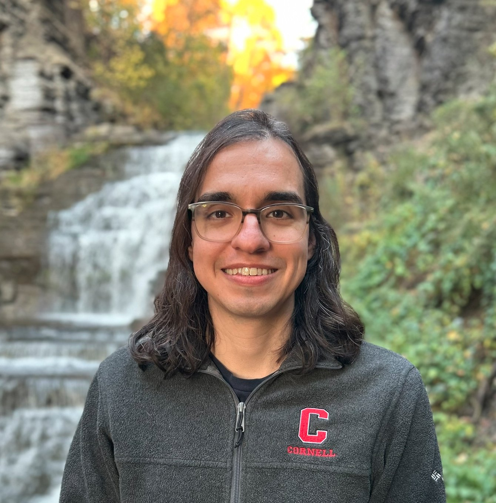

Kevin Alarcón Negy
Cornell University
Computer Science PhD candidate
Expected graduation: May 2025
kevinnegy@cs.cornell.edu
302 Bill & Melinda Gates Hall
I am a Princeton Lecturer (Teaching Professor) in the Department of Computer Science. Previously, I was at Cornell earning a Ph.D., advised by Adrian Sampson. My research interests encompass operating systems, virtualization, kernels, storage systems, and computer architecture. I previously worked in the field of cryptocurrencies.
Here is my CV.
Teaching
Teaching Assistant - Practicum in Operating Systems (CS 4411). Cornell University. Spring 2025.
Instructor of Record - Fundamental Programming Concepts (CS 1109). Cornell University. Summer 2024.
Teaching Assistant - Practicum in Operating Systems (CS 4411). Cornell University. Spring 2024.
Publications
Kevin Alarcón Negy, Tycho Nightingale, Hakim Weatherspoon, Zhiming Shen. Towards Swap-Free, Continuous Ballooning for Fast, Cloud-based Virtual Machine Migrations. In Proceedings of 15th ACM Symposium On Cloud Computing (SOCC), Redmond, WA. Nov. 2024.
Kevin Alarcón Negy, Peter Rizun, Emin Gün Sirer. Selfish Mining Re-Examined. In Proceedings of Financial Cryptography and Data Security 2020 Twenty-Fourth International Conference, Kota Kinabalu, Malaysia. Feb. 2020. [slides][pdf]
Archive
Guide to the PhD Application Process.
Updated as of June 2025.